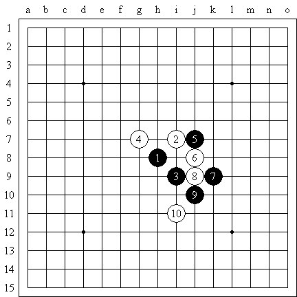
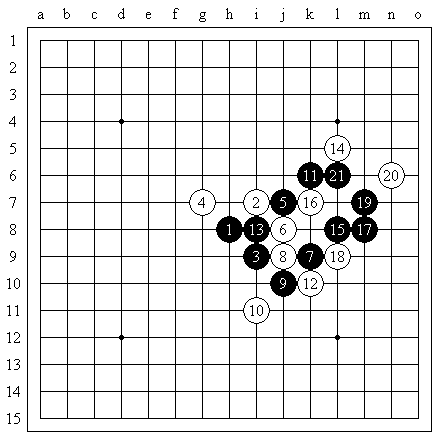
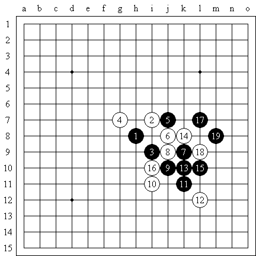
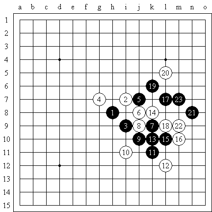
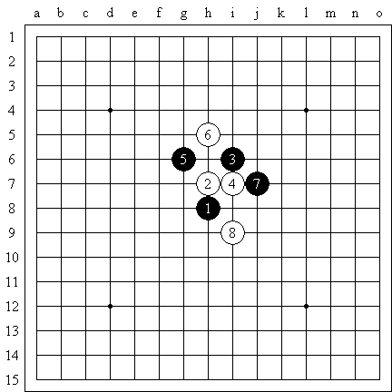
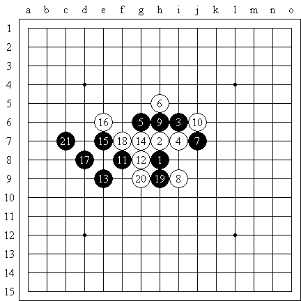
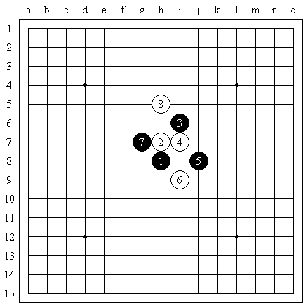
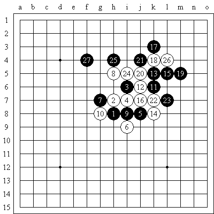
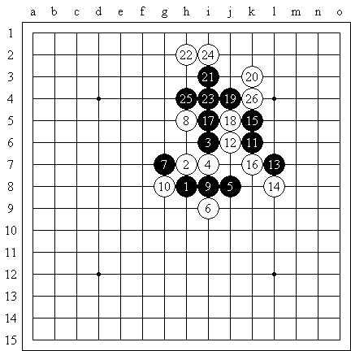

攻击方法的多样性（1）

以此题为例吧。黑棋拓展的方向向右，白棋此时无任何的反击，黑棋可以顺利的做棋。下面我们来看下有至少两种以上的攻击方法。

方法一。
11向上拓展，
12是局部唯一的反击。其他都弱。同时让黑棋定型
14白棋显然要阻止黑棋向外拓展。
15做棋要点。此刻空间比较狭小。如果黑棋不胜，这个11的胜法不再成立。
16是唯一一个比较强的挡点，让黑棋不能向左边做棋。
17作杀，18唯一。19冲是要点。21以后黑必胜。

胜法2，黑棋直接向右进攻，15之后，黑棋攻击强烈。18不能阻挡黑棋17和19向上的攻击线路。黑棋也必胜。

胜法2－2 白棋16防守右边似乎比刚才要强。既然黑棋的进攻主方向选择了右边，那么就从右边开始吧。17防守的同时，同时做了一手。18的防守似乎和刚才一样。19稍做变化，依葫芦画瓢。20白棋阻挡黑棋向外拓展。21跳，23做是最后一击。
传闻还有其他胜法，不一一列举。我们看到黑棋攻击的主方向是右边和上面。但做棋的手法是多种多样。
攻击方法的多样性（2）

这是溪月开局的一个走法。我们来看一下黑棋的胜利方法。

黑棋21活三，白棋无法阻挡。黑棋已经必胜。

下面我们来看另一走法。显然由于盘端的差异。黑棋无法用刚才的走法取胜。如果硬要走的话，最后，白棋跳冲必然能够使得黑棋变成一个眠三，而导致白棋取胜。

局部的攻击方法有多种，例如上图，黑棋虽然不能取胜。但依然能够获得优势。

11必然，13也是要点之一。16，18，20，22，24都是白棋唯一的防守点。所有一系列走法也是黑棋不错的。
虽然三种走法有相似的地方，就是压迫白棋走入不利的，被包围的死地。但三种黑棋的攻击方式还是略有差别。
写得不错，看一个晚上看了一半，主要是把作者的其他的弱的下法也拿出来自己研究了下子，明天继续再看，有的做棋点，还一下子看不出来，还是问人才清楚的，
在学习种
有点难 要琢磨一会儿才能明白 不过比较详细 多谢了